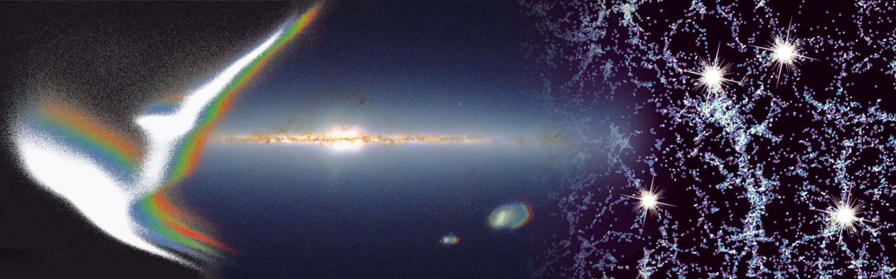

The Milky Way and Large Surveys
Heidelberg Physics Grad Days, 4-8 October 2021
Gregory Green
Why Study the Milky Way?
History of study of the Milky Way
SDSS-V
Pioneering Panoptic Spectroscopy
The next generation of Milky Way spectroscopy
Components of SDSS-V

Milky-Way Mapper

Moving beyond our local corner of the Milky Way, to survey a large fraction of the Galaxy.
Local Volume Mapper

Spatially resolved, medium resolution ($R \sim 4000$) optical spectra of the interstellar medium throughout the Milky Way, the Magellanic Clouds, Andromeda, and other nearby galaxies.
Local Volume Mapper: the Orion Nebula

The Orion nebula will be observed at a resolution of 0.07 pc/spaxel.
Detailed information about chemistry & ionization of the interstellar medium.
Gaia
The Milky Way in 6D
ESA/Gaia/DPAC; A. Brown, S. Jordan, T. Roegiers, X. Luria, E. Masana, T. Prusti and A. Moitinho
Astrometry: position & velocity
Parallax

How Gaia works
Gravitational deflection of light by Solar System bodies
Radial Velocity Spectrometer

Basic properties
- Slitless spectroscopy - sources can overlap!
- RV measured using Doppler shift of atomic lines.
- Medium resolution: $R \equiv \lambda / \Delta\lambda \sim 11500$.
- Measures RV to <1 km/s for bright stars.
- Currently >7 million stars with measured RV. Will soon grow to >30 million.
Example spectrum on the CCD

Flux vs. wavelength

➞ Ca II triplet of absorption lines critical to determining RV.

Average radial velocity over the sky

Velocities of local stars (<200 pc)
Stars are clumpy in velocity space.
Different ways to get clumps:
- Stars are born in clouds, and take time to disperse.
- Dynamical processes (e.g., resonances) shepherd stars into clumps.
- Accreted galaxies are kinematically distinct from Milky Way stars.